01ภาพรวม
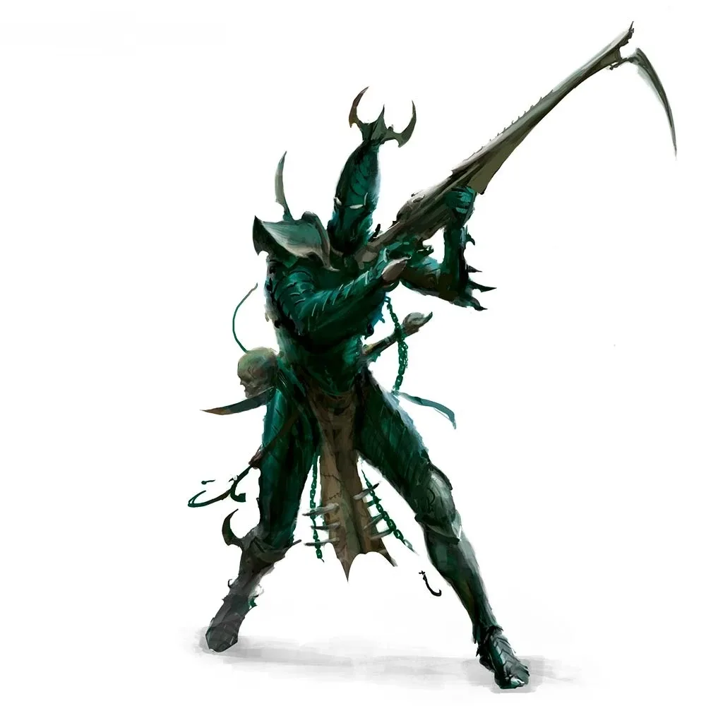
โจรสลัดจากเมืองมืดใน Webway ที่ต้องกินความทรมานของผู้อื่นเพื่อไม่ให้วิญญาณถูก Slaanesh ดูดกลืน
02ต้นกำเนิด
บรรพบุรุษคือชนชั้นสูงของ Aeldari ที่อาศัยใน Commorragh เมืองใหญ่ใน Webway ก่อน The Fall เพราะอยู่ในมิติของ Webway พวกเขาจึงรอดจากการกำเนิดของ Slaanesh — แต่วิญญาณยังค่อย ๆ ถูกดูดกลืน ทางเดียวที่จะชะลอได้คือดูดพลังจากความเจ็บปวดของผู้อื่น
03เนื้อเรื่องเจาะลึก
Commorragh — เมืองที่ซ่อนใน Webway
เมืองใหญ่ที่สุดในกาแล็กซีซ่อนอยู่ใน Webway ไม่มีวันถูกดาบของ Slaanesh ทำลายโดยตรง แต่ Drukhari ก็ต้องจ่ายราคาด้วยการทรมานผู้อื่นตลอดไป ภายในเมืองมีการแย่งชิงอำนาจระหว่าง Kabal ตลอดเวลา
Dysjunction
เมื่อ Great Rift เกิดขึ้น บางส่วนของ Commorragh ถูกปีศาจบุกเข้ามา (Dysjunction) Vect ต้องร่วมมือกับศัตรูเก่าเพื่อปิดประตู เหตุการณ์นี้ทำให้ Drukhari บางส่วนเข้าร่วมขบวนการ Ynnari
04ยุค 30K — ในยุค Great Crusade และ Horus Heresy
ยุค 30K Commorragh ดำรงอยู่แล้วหลายพันปี Drukhari บุกปล้นมนุษย์มาตั้งแต่ยุคนั้น แต่ไม่ได้เลือกข้างในสงครามกลางเมืองของมนุษย์
ดูภาพรวมยุค 30K ทั้งหมดที่ เนื้อเรื่องยุค 30K และความต่างของสองยุคที่ เปรียบเทียบ 30K vs 40K
05นิสัยและวัฒนธรรม
- แบ่งเป็น Kabal (ตระกูลขุนนาง), Wych Cult (นักสู้ในสนามประลอง) และ Haemonculus Coven (ผู้เชี่ยวชาญการทรมานที่ชุบชีวิตคนได้)
- บุกปล้นจับทาสจากโลกจริงแล้วกลับเข้า Webway
- ทรยศ แย่งชิง ลอบสังหาร เป็นเรื่องปกติของการเมือง
06จุดที่น่าสนใจ
- Asdrubael Vect: จากทาสกลายเป็นผู้ปกครองสูงสุดของ Commorragh
- ผู้ที่ถูก Haemonculus ฆ่าอาจถูกชุบชีวิตใหม่ได้
07ความสามารถพิเศษ
สิ่งที่ทำให้ Drukhari แตกต่างจากทัพอื่น — ทั้งพลังที่ติดตัวมาทั้งเผ่า/ทัพ และความสามารถของบุคคลสำคัญ
ของทั้งเผ่า/ทัพ
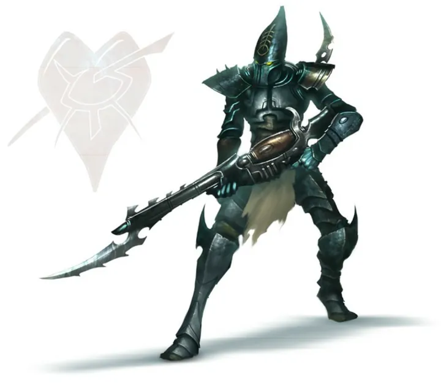
กินความทุกข์เพื่อมีชีวิต
วิญญาณของ Drukhari ถูก Slaanesh ดูดอยู่ตลอดเวลา พวกเขาต้องเสพ "ความเจ็บปวดและความกลัว" ของผู้อื่นเพื่อเติมชีวิต ถ้าไม่ทรมานใคร ร่างกายจะเหี่ยวแห้ง ยิ่งเสพมากยิ่งแข็งแกร่ง ทำให้เป็นอมตะได้ตราบที่ยังทรมานผู้อื่น
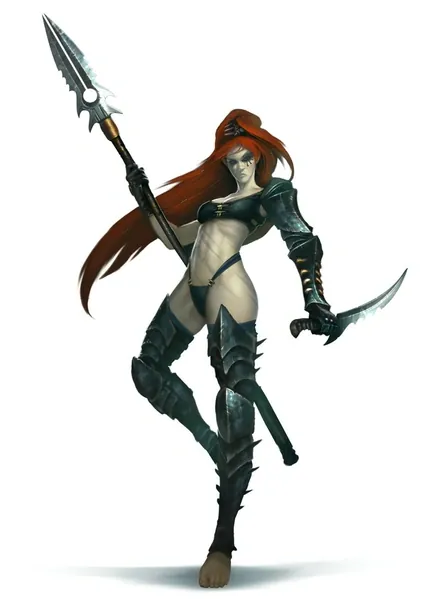
Power from Pain
ยิ่งฆ่าศัตรูในสนามรบ Drukhari ยิ่งแข็งแกร่ง รวดเร็ว และทนทานขึ้น เพราะดูดพลังจากความตาย
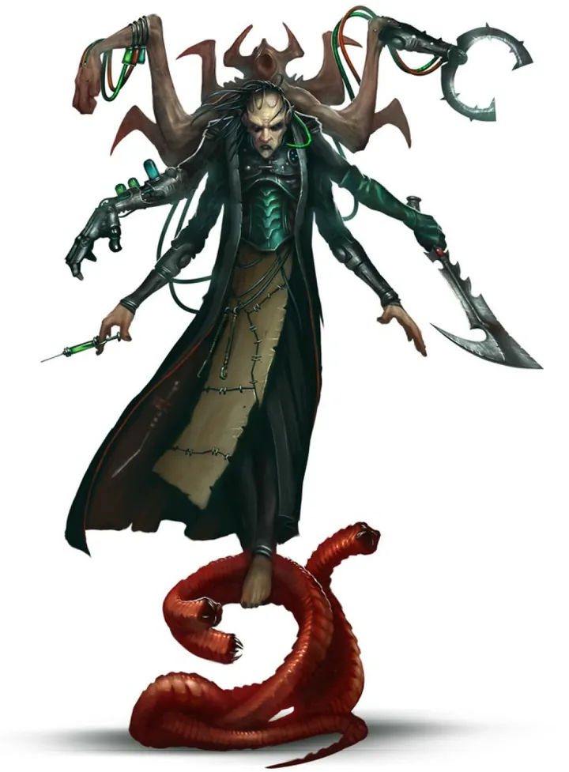
ชุบชีวิตได้ (มีราคา)
Haemonculus สามารถปลุก Drukhari ที่ตายแล้วขึ้นมาใหม่จากเศษร่างกาย — Lelith Hesperax และ Archon หลายคน "ตาย" มาแล้วหลายครั้ง
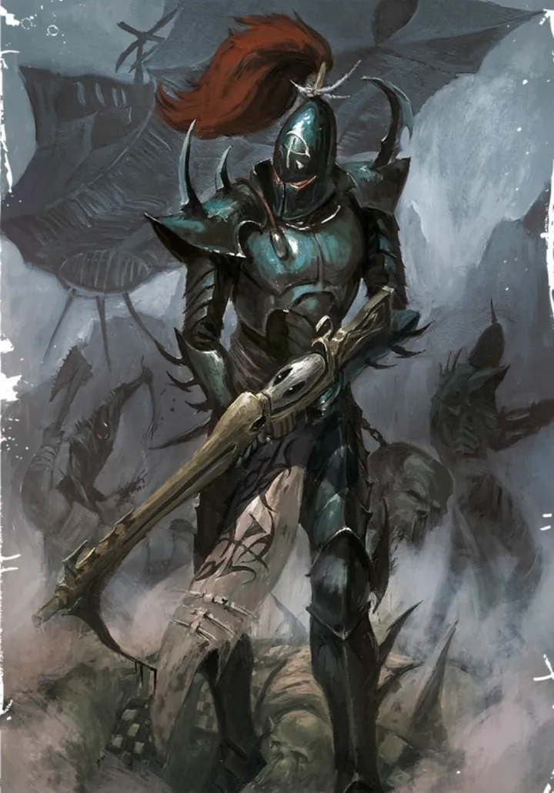
นักล่าไร้เสียง
บุกด้วยยานเร็วผ่าน Webway โผล่ขึ้นมาจับเชลยแล้วหายไปก่อนจักรวรรดิตั้งตัว ใช้ปืนพิษ Splinter ที่ทำให้เหยื่อทรมาน
ของบุคคลสำคัญ

Asdrubael Vect
Supreme Overlordทรราชผู้ปกครอง Commorragh มาหลายพันปี เริ่มจากทาสจนขึ้นเป็นผู้ปกครองสูงสุดด้วยการวางแผนหักหลังทุกคน

Lelith Hesperax
ราชินีแห่งเวทีผู้นำ Wych Cult ที่เก่งกาจที่สุด ต่อสู้ในสนามกลาดิเอเตอร์โดยไม่สวมเกราะเพราะไม่มีใครแตะเธอได้

Urien Rakarth
Master Haemonculusนักทรมานที่เก่าแก่ที่สุด ตายและฟื้นมาแล้วนับครั้งไม่ถ้วน และชอบให้ร่างใหม่ของตัวเองแปลกประหลาดขึ้นทุกครั้ง
08หน่วยและบทบาทในกองทัพ
Drukhari อาศัยในเมืองใต้ Webway ชื่อ Commorragh และต้องทรมานคนอื่นเพื่อชดเชยวิญญาณที่ Slaanesh ดูดไป สังคมแบ่งเป็น 3 ฝ่ายใหญ่: Kabal (ขุนนาง), Wych Cult (นักสู้กลาดิเอเตอร์), Haemonculus Coven (นักทรมาน)
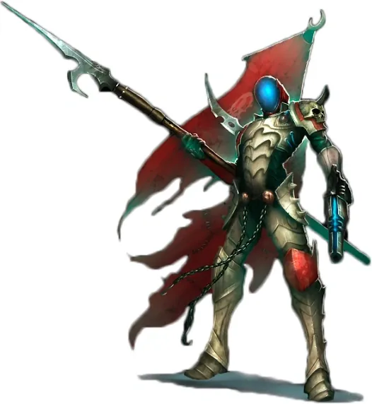
Archon
อาร์คอนผู้นำ Kabal ขุนนางที่ปกครองด้วยเล่ห์เหลี่ยม ผู้ยิ่งใหญ่ที่สุดคือ Asdrubael Vect
Haemonculus
ฮีโมนคิวลัส"หมอ" แบบบิดเบี้ยว — ผู้เชี่ยวชาญร่างกายที่ทรมาน ผ่าตัด และสามารถ "ชุบชีวิต" Drukhari ที่ตายแล้วได้ (ถ้าจ่ายราคา)
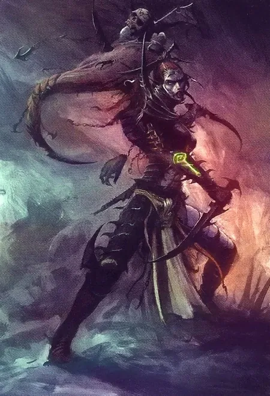
Succubus
ซัคคิวบัสผู้นำ Wych Cult ดาราแห่งสนามกลาดิเอเตอร์ เช่น Lelith Hesperax
Kabalite Warriors
คาบาไลต์วอร์ริเออร์ทหารหลักของ Kabal ใช้ปืนพิษ Splinter Rifle โจมตีด้วยความเร็ว
Wyches
วิทช์นักสู้ในสนามกลาดิเอเตอร์ ใช้ยาเสพติดสงครามเพิ่มความเร็ว
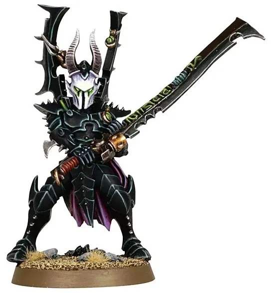
Incubi
อินคิวไบนักรบรับจ้างที่รับใช้เทพสงคราม Khaela Mensha Khaine ใช้ดาบ Klaive
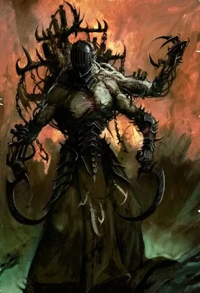
Wracks / Grotesques
แร็ก / โกรเทสก์Drukhari ที่ยอมให้ Haemonculus ดัดแปลงร่าง กลายเป็นผู้ช่วยนักทรมานและสัตว์ประหลาดกล้ามโต
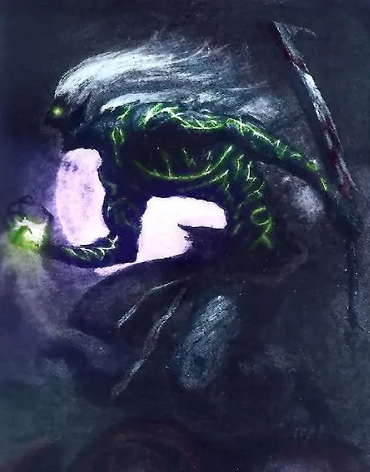
Mandrakes
แมนเดรกสิ่งมีชีวิตจากเงามืด โผล่ออกมาจากเงาและฆ่าอย่างเงียบ ๆ
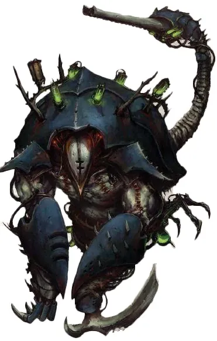
Talos
ทาลอสเครื่องจักรทรมานที่มีชีวิต Haemonculus สร้างขึ้นใช้ทั้งทรมานและรบ
09วีรกรรมและเหตุการณ์สำคัญ
Commorragh
ขุนนางสร้างอาณาจักรลับใน Webway
Dysjunction
Commorragh เกิดความโกลาหลเมื่อ Yvraine ฟื้นคืนชีพกลางสนามประลอง
10ตัวละครสำคัญ
Asdrubael Vect
Supreme Overlord แห่ง Commorraghผู้นำที่ฉลาดและโหดเหี้ยมที่สุด
11ยุค 40K — สหัสวรรษที่ 41
ยุค 40K Drukhari บุกปล้นดาวของมนุษย์และเผ่าอื่นอย่างต่อเนื่อง
12เนื้อเรื่องล่าสุด (Era Indomitus / M42)
Great Rift ทำให้ Webway สั่นคลอน แต่ Vect ยังคุม Commorragh และบางครั้งก็ทำข้อตกลงกับฝ่ายอื่น เช่น ยอมให้ Drukhari บางส่วนไปร่วมกับ Ynnari
หลังการเกิด Great Rift ปฏิทินของจักรวรรดิคลาดเคลื่อน เหตุการณ์ยุคปัจจุบันจึงมักระบุเพียง 'M42' ไม่มีปีที่แน่นอน
13แกลเลอรี
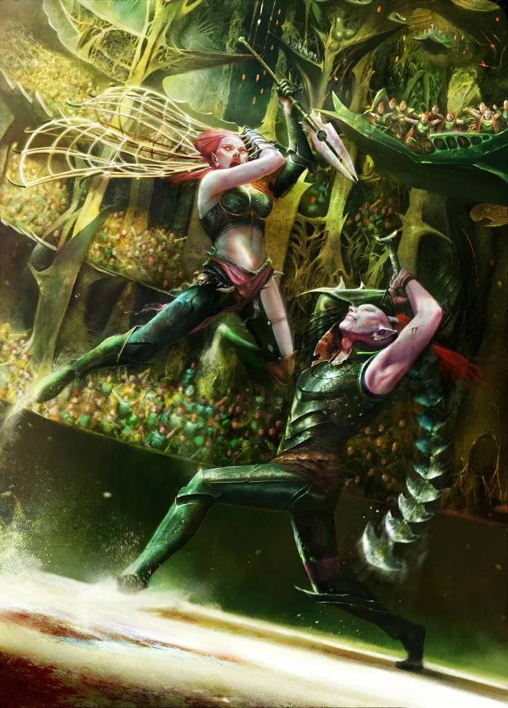